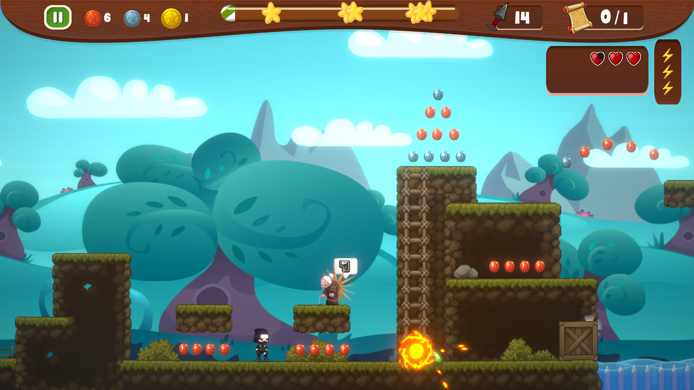
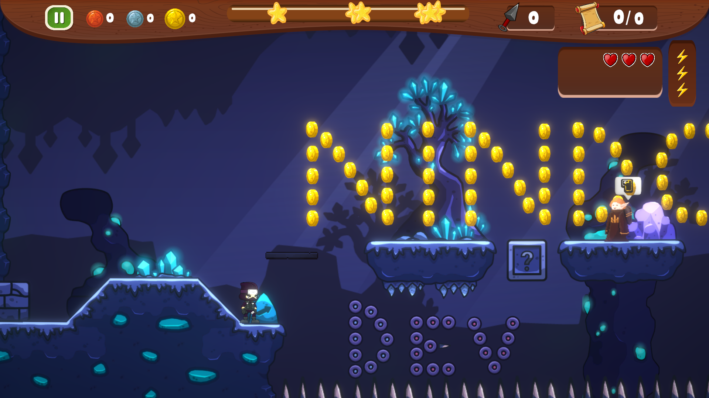
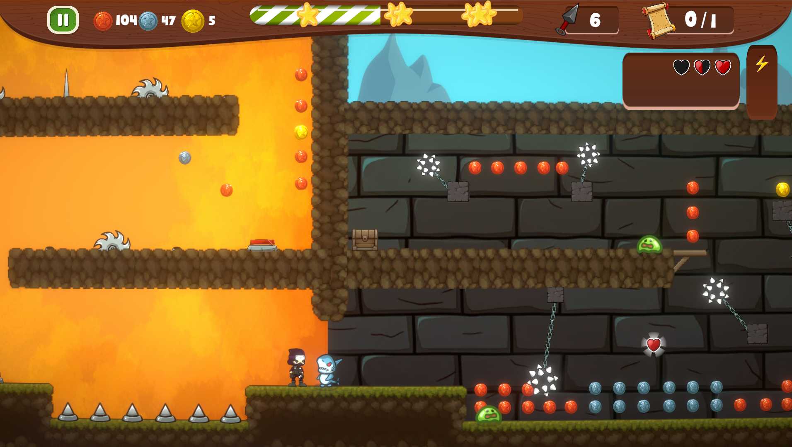

A beautiful 2D platformer adventure. Play as a ninja seeking revenge to retrieve a stolen scroll. Battle monsters, overcome obstacles, and face epic bosses in a mystical world accompanied by soothing music.
Developer Updates
What we are currently working on.
Mobile Version
We are working hard to optimize the controls and performance so you can take Nindo with you on your iOS and Android devices!
New Levels
More obstacles, smarter monsters, and intricate level designs are currently being built to challenge your ninja skills even further.
The Scroll Must Be Found
In a realm where shadows dictate the fate of the innocent, a sacred scroll containing ancient jutsu has been stolen by the demon lord. You are the last surviving master of the Nindo clan.
Navigate through challenging realms, dodge deadly traps, and fight waves of vicious monsters in your relentless quest for revenge. The fate of the clan rests on your blade.
Gameplay Gallery
A glimpse into the magical world of Nindo.



Frequently Asked Questions
Everything you need to know before you play.
Is NINDO: The Lost Scroll free to play?
Yes! The game is currently completely free to download and play during its Early Access phase on PC.
When will the mobile version be released?
We are actively working on the mobile version right now. While we don't have an exact release date yet, it is our top priority. Sign up for our newsletter to get notified the moment it drops!
What are the system requirements for PC?
Because it's a 2D platformer, it's highly optimized! Any PC with at least 4GB of RAM, a basic graphics card, and Windows 10/11 will run the game smoothly.
How many levels are there currently?
Currently, there is only 1 level available in Early Access, but we are actively working on building more levels, regions, and epic boss fights!